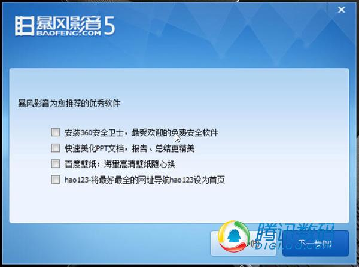
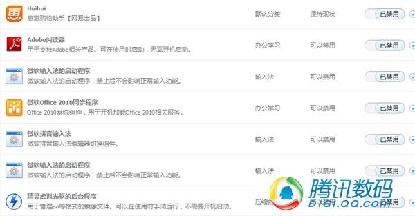

你肯定有过这样一种经历，就是下载安装了某些软件之后，要么自己的使用习惯被恶意更改，要么是系统里莫名其妙多出奇怪的东西。技术稍微好点的朋友还能够通过查找问题源、把被修改的主页、修改的注册表再修复回来，不太懂的小白用户通常只能投靠"技术宅"，而如果任由情况不管，时间一长重装系统就是铁定的下场。那么常用的软件到底都是如何耍流氓的呢？今天我们就来聊聊这个话题。
有提示和无提示的捆绑安装插件
较有良心的提示性插件，但某安全卫士认为它会拖慢电脑

在没有提示的情况下，安装插件游戏盒子以及砸蛋页面广告
许多朋友在安装软件包的时候并不会仔仔细细的观看每一步安装界面，尤其是只爱淘宝、韩剧的妹子们哪有心思看那些，时间一长就会发现电脑冗余的软件很多，这些软件都不是自己主动安装的，但不知什么时候，它们就出现在电脑里。这种情况，八成是因为软件捆绑的插件"偷偷"安装所导致的。

带有提示的篡改主页行为 安装过程中稍有疏忽就会被篡改
某旺旺捆绑UC浏览器、如意淘、阿里网盘、淘宝手机助手5款插件和UC123主页
目前捆绑安装已经是非常普遍的现象，但碍于职业操守，大部分软件公司所提供的常用软件在捆绑软件安装的时候都会在安装步骤中或明显或不明显的提示用户。对于这部分软件，我们在安装过程中只要认真的观察每一个安装步骤是否有这类提示，像做数学题填简历一样的睁大双眼，通常就可以避免错误安装捆绑的软件。

某影音软件携带的360安全卫士、PPT美化、百度壁纸三款插件以及hao123主页导航

在手动取消点选安装插件之后，某影音软件依然在没有提示的情况下安装了飞屏软件
而对于一些丝毫不顾节操，在完全不提醒用户的情况下就擅自安装插件的软件来说，也许我们真的没有什么好办法，我们只能不用它或是安装之后记得再去手动卸载。
篡改浏览器主页
篡改浏览器主页是软件耍流氓的另一个常用伎俩，通过软件安装，调用系统中跟软件不相关的浏览器功能和注册表信息，通过修改这些参数达到将主页更改为与软件有利益关系的主页，以提高用户访问该主页的访问量。想必hao123、2345网址导航这类主页完全清楚自己在初期是如何一点点占据用户浏览器的。
篡改浏览器主页实际上还分浅度和深度，一般浅度篡改用户通过手动更改浏览器主页设置、调整注册表相关键值就能够将篡改修改回来。但个别情况下由于篡改更加深度较大，调用的系统功能很多，即使是对系统非常了解的用户都很难通过修改浏览器设置和注册表将主页更改回来。这种情况通常只会出现在一些来历不明的安装包当中，所以建议大家尽量不要下载使用来源不明的软件安装包。
秘技：如果你已经遭受打击，想尽了办法仍然不能将浏览器的主页修改回来，那么我们教你一个方法。Win7和Win8实际上都集成了一个非常有用的还原点还原功能，用户只需要打开该功能，找到一个安装软件之前的安全的系统时间点进行一次恢复便一定能够帮你解决问题。
随意占据启动项
常用软件耍流氓第三式：随意占据启动项。观察我们身边的电脑用户，懂得系统维护的朋友总是能够让电脑保持30几秒开机，在没有SSD的情况这是一个健康的开机速度。而另外一些不太注重系统维护的朋友，他们的电脑通常是越用开机时间越长，不少朋友的电脑开机速度都至少要1分钟以上，这就很有可能是被软件随意占据启动项而导致的。

许多启动项是普通用户不需要开机启动的
以某用户的电脑为例，我们看他的启动项里就有许多原本开机自动启动的项目，被他人为禁用了，其中包括我们常见的微软输入法、Adobe Reader、虚拟光驱后台程序，对于我们大部分用户来说它们并没有必要随着系统的启动同时开启，我们只需要在使用它们的时候才去调用就可以了，所以通过对它们执行禁用操作，就能够有效的减少开机时间。查看一下你的电脑启动项，想想哪些软件是你不需要一开机就运行的，痛快的禁用它们吧！
更改默认打开方式
正所谓"一山不容二虎"，当一台电脑被同时安装了同一类型的两种软件的时候，结果会是怎么样的？那就是后安装的程序一定会为自己多争取存在的机会和价值。表现出来的就是，浏览器会提示用户将自己修改成默认浏览器，播放器会提示用户将自己更改为默认媒体打开方式。这样一来二去会给用户带来什么问题呢？用户今天点击链接打开的是浏览器A，明天打开可能变成了浏览器B。今天打开音乐的是OO音乐、明天再打开也许会是龙虾音乐、后天又变成芊芊静听。默认方式被改来改去，给用户带来了使用上的不便，给系统带来了混乱。
建议：
1、"一夫一妻"，固定伴侣。
2、某些软件，每次开机都会重新确立自己默认打开方式地位，例如，"K我音乐"，面对这类手段极其强硬的流氓行为，要么选择卸载它，要么选择将其他软件设置为非默认软件或卸载。
防不胜防的广告弹窗

暴风影音的广告弹窗
除了去年315当中曝光的，网络运营商分片区在网页上推送广告弹窗恶行之外。其实软件里是否夹带有广告弹窗，这往往取决于软件的盈利模式。一些软件厂商为了挣钱不择手段，强行在桌面推送纯广告弹窗，这让我们普通用户被动成为了广告的观众，影响了电脑系统的和谐美观。
大部分带有广告推送的软件是支持用户设置拒绝广告推送的，用户可以在这类软件的设置中找到相关禁用功能。不过如果软件没有提供这类屏蔽选项，虽然网上有一些针对性的广告屏蔽技巧，但是却没有一种技巧是可以完全杜绝这种问题的。如果你受够了这些广告，答案也许只有卸载。可是卸载就能一切顺利，不再心塞吗？不见得。
蓄意阻拦卸载
为了让用户不卸载掉软件留住用户，软件厂商想尽了各种办法，最典型的就是在用户卸载软件的过程中加以阻拦。你想像软件安装过程一样顺利的卸载掉它？门也没有啊！

经多个选项判断和多次窗口跳转方能卸载
"再清理一次垃圾肿么样？""亲，卸载你的电脑没有我们保护了哟亲。""不用我们软件，系统就要变慢了哟亲！""是强制安装的手机助手不合胃口吗，要不先把它卸载了你再感受感受？"每次看到软件如此百般刁难不愿离去，都特别想爆粗口的请举手。
总结：
其实互联网时代没有什么不可能，任何软件产品都存在竞争。为了商业利益不顾用户感受的做法可以换来短时间的效益。但是从长远来看，这并不利于增加用户体验和用户黏度。当你的软件不能够给用户一个良好体验，恰好另一款类似软件体验很好的时候，很有可能它就在迅速攻城略地之后夺走市场。如果我说的还没有变成现实，那么作为厂商你该感到庆幸，庆幸对手还不够强大足以颠覆，庆幸用户还在默默忍受而没有抛弃。
原文出处：http://www.techug.com/software-cheater